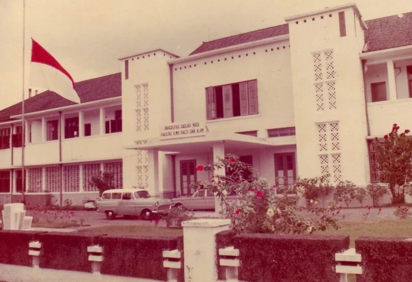

"Gedung Pantja Darma ini tidak lain adalah nama kepada lima gedung yang berada di Sekip UGM..."Selengkapnya
"Gedung Pantja Darma ini tidak lain adalah nama kepada lima gedung yang berada di Sekip UGM..."Selengkapnya
"Pada saat Gedung Pusat UGM diresmikan pada tanggal 19 Desember 1959 oleh Ir Sukarno..."Selengkapnya
"DPAD DIY Ajukan Arsip Colombo Plan Sebagai Memori Kolektif Bangsa"Selengkapnya
"Lokasi Kompleks Pantja Dharma UGM merupakan cikal bakal sarana pendidikan pertama yang dibangun UGM..."Selengkapnya
Sekolah Vokasi, Universitas Gadjah Mada, DI Yogyakarta.
Terdaftar sebagai Cagar Budaya Tingkat Provinsi.
Dokumentasi resmi UGM dan pemindaian 3D.